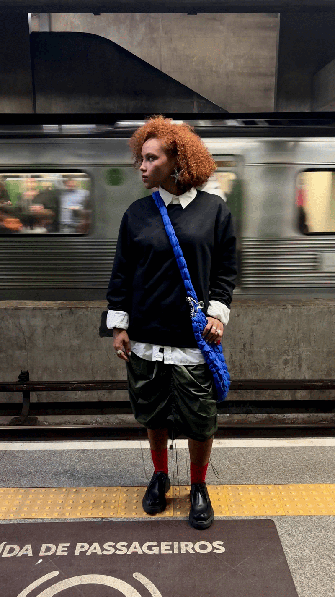

Fatima Mohamed
Formada em Design de Moda, o trabalho parte de pesquisas em arte contemporânea, arquitetura brutalista e movimentos de vanguarda para construir peças que não se resumem a tendências.

Formada em Design de Moda, o trabalho parte de pesquisas em arte contemporânea, arquitetura brutalista e movimentos de vanguarda para construir peças que não se resumem a tendências.